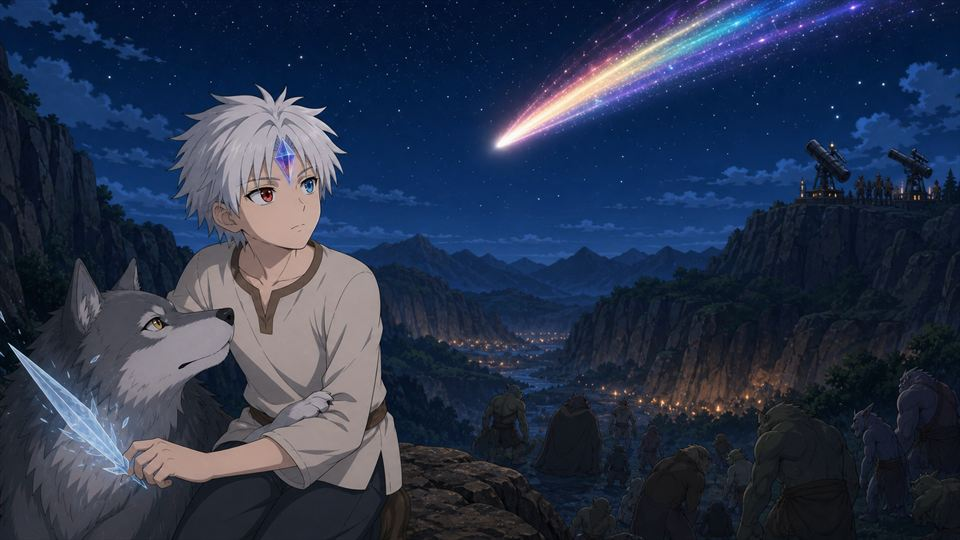

SEASON 01 · 60 EPISODES
성벽 없는 아침까지
여섯 개의 장.
불필요하게 늘어지는 모집 과정을 줄이고, 각 장마다 관계 변화·발견·결전을 배치한 60화 전개입니다.

EPISODE GUIDE
원하는 장과
회차를 선택하세요.
조건에 맞는 회차가 없습니다.
SEASON 01 · 60 EPISODES
불필요하게 늘어지는 모집 과정을 줄이고, 각 장마다 관계 변화·발견·결전을 배치한 60화 전개입니다.

EPISODE GUIDE
조건에 맞는 회차가 없습니다.